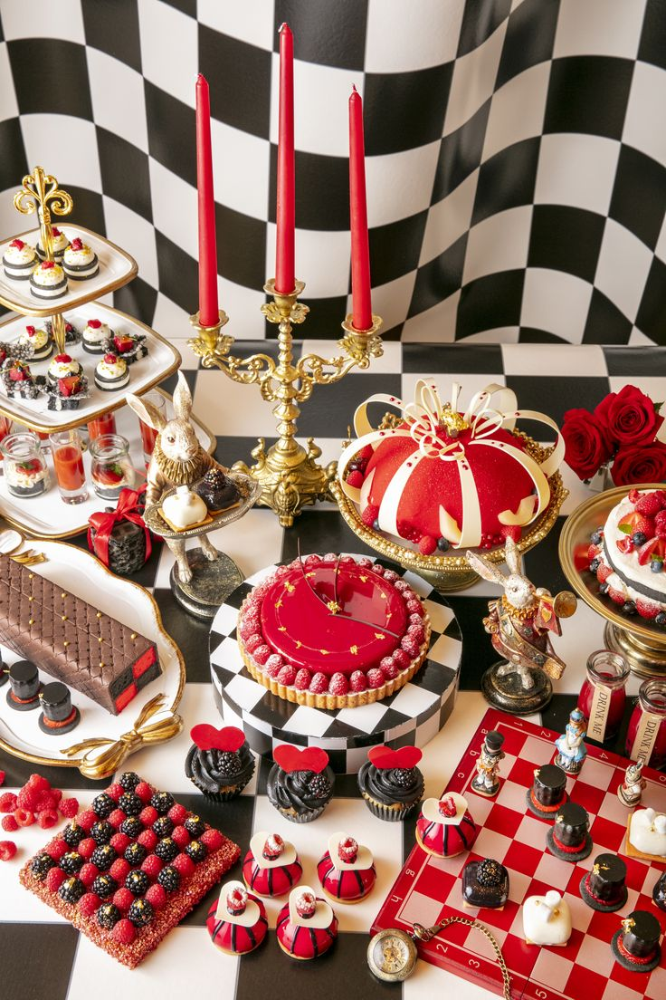
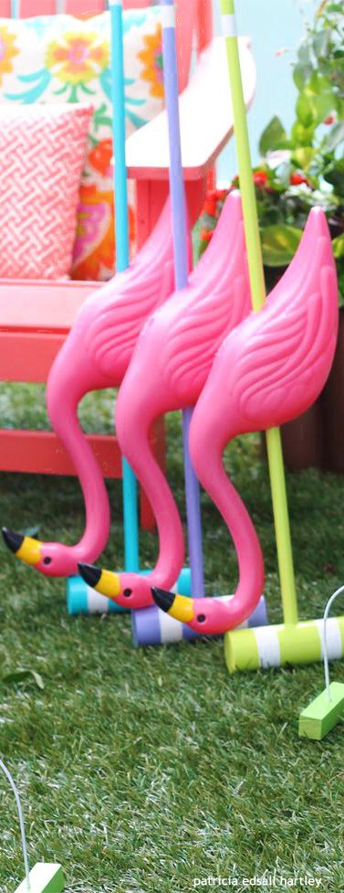

Bienvenidos a nuestra Casa de Té: Sumérgete en un mundo de ensueño donde cada sorbo cuenta una historia . En nuestra encantadora Casa de Té, te invitamos a dejar atrás la rutina y adentrarte en un mágico rincón inspirado en el clásico universo de "Alicia en el País de las Maravillas ". Déjate llevar por la fantasía, mientras disfrutas de una selección exquisita de tés, infusiones y deliciosos dulces que parecen sacados de un cuento. Explora nuestros espacios temáticos , cada uno diseñado para ofrecerte una experiencia única, cada rincón está lleno de sorpresas y detalles que te transportarán a un mundo donde la imaginación no tiene límites. Perfecto para encuentros con amigos, celebraciones especiales o simplemente para disfrutar de un momento relajante. Ven y descubre por qué nuestra Casa de Té es más que un simple lugar para beber; es una experiencia mágica que recordarás por siempre. Te esperamos con los brazos abiertos y una tetera lista . ¡Atrévete a ser parte del cuento!
Un festín de locura y creatividad
Un lugar donde la diversión y la imaginación no tienen límites, inspirado en el icónico personaje del Sombrerero Loco . Aquí, cada rincón está lleno de color, risas y sorpresas que invitan a los visitantes a dejarse llevar por la locura mágica de este mundo encantado.
Déjate sorprender por nuestro menú único y excéntrico, donde cada platillo es una obra de arte. Desde tazas de té burbujeantes hasta deliciosos bocados que desafían la gravedad, cada bocado es un viaje hacia lo inesperado. Prueba nuestras infusiones “Té del Caos” o los “Pasteles Delirantes”, que no solo son deliciosos, sino que también son un festín para los ojos.
En "El Sombrero Loco" , la diversión nunca se detiene. Participa en nuestros juegos interactivos que pondrán a prueba tu ingenio y creatividad. Desde adivinanzas locas hasta desafíos de arte espontáneo, cada visita es una oportunidad para dejar volar tu imaginación. Organiza una competencia amistosa con amigos y descubre quién puede crear el sombrero más extravagante.
¿Te atreves a adentrarte en el mundo de la reina de corazones ?
Aquí, la fantasía se convierte en realidad mientras te sumerges en un jardín exuberante lleno de sorpresas, donde las cartas cobran vida y las rosas florecen en un espectáculo deslumbrante. Déjate llevar por una experiencia sensorial única mientras disfrutas de nuestras exquisitas infusiones, cada una con un nombre que evoca el espíritu del juego desde el intrigante "As de corazones" hasta el intrigante "dama roja".Complementa tu bebida con nuestras delicias artesanales, como pasteles en forma de cartas y galletas decoradas que despiertan la curiosidad y el apetito.
Pero eso no es todo: nuestro espacio también ofrece una variedad de juegos temáticos que prometen risas y emoción. Participa en emocionantes partidas de croquet al estilo de la Reina de Corazones, donde cada golpe es una oportunidad para demostrar tu destreza.
 Informacion y reglas del croquetAdemás, disfruta de juegos de cartas como póker y blackjack, con barajas personalizadas que añaden un toque especial a cada mano jugada.

Si estas interado o quieres mas informacion escribinos
Enviar un correo